We implemented a NPR technical drawing shader in WebGL with three.js. We followed the Gooch 1998 paper "A Non-photorealistic Lighting Model For Automatic Technical Illustration". A technical drawing consists of the following: black edge lines, the coolness/warmth of color indicates the surface normal, a single light source for highlights, and no shadows. We implemented the Gooch lighting model as it uses luminance and changes in hue to replicate human-drawn technical illustrations and shades only in mid-tones such that the resulting image has clearly distinct edge lines and highlights. We created a real time demo that lets people change the value of the different parameters to better understand the Gooch lighting model.
| 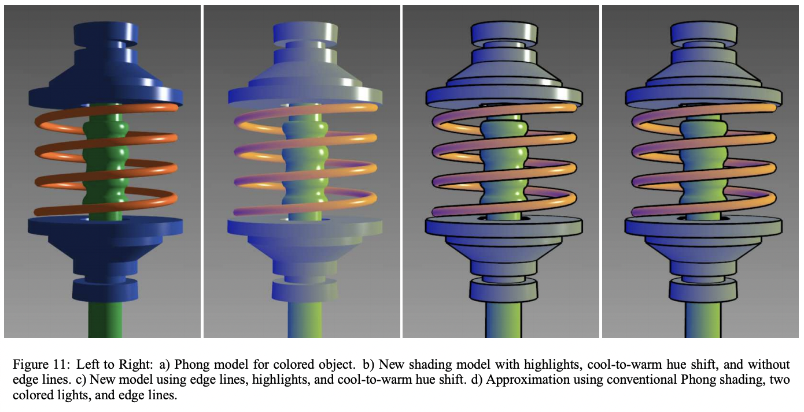 |
From lecture and our projects, we learned that Blinn-Phong shading is the sum of our ambient, diffuse, and specular components. We used the diffuse shading formula from the paper, which is:
| 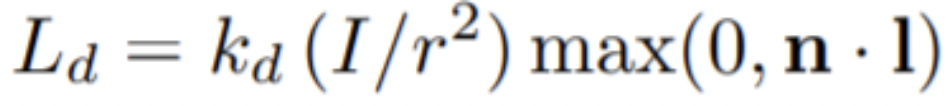 |
This gives us an unsatisfactory image which hides shape and material information, especially in the dark regions. To counter this, we added highlights (and later edge lines) on our object, which helps with defining our object.
| 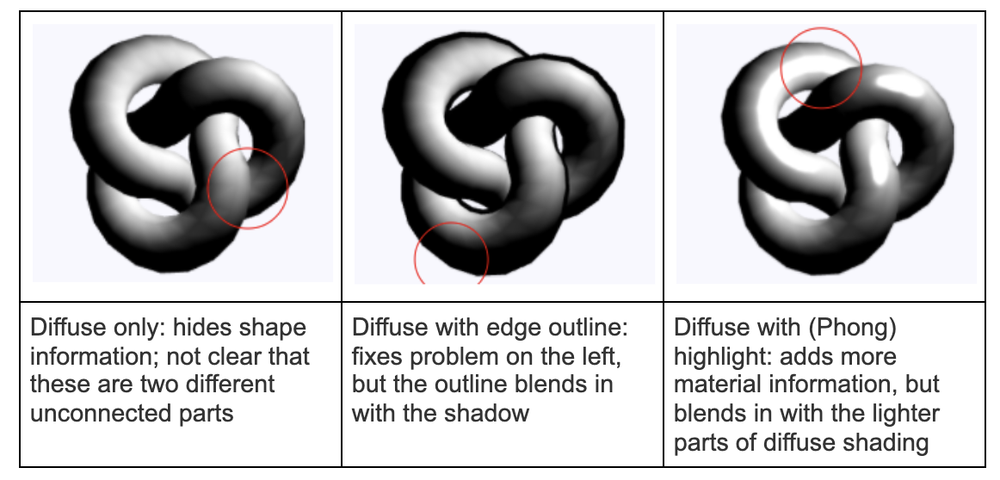 |
We use the Blinn-Phong method for creating specular highlights as it provides material information. We used p = 50.
| 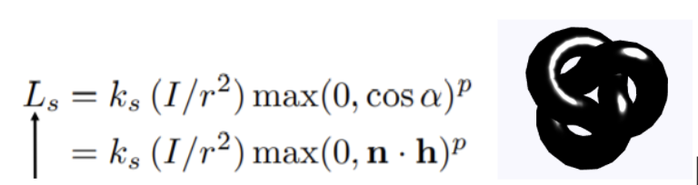 |
We found that detecting edges is a challenging task to do in NPR shading. For now, we decided to create another mesh for our object and render the back faces. Then, we changed the color to black and adjusted the thickness of our outline to achieve results more similar to a technical illustration.
We tried a different method, which is adding a second light in our scene, but this ultimately did not work because it might require a different implementation of our shading and highlights.
| 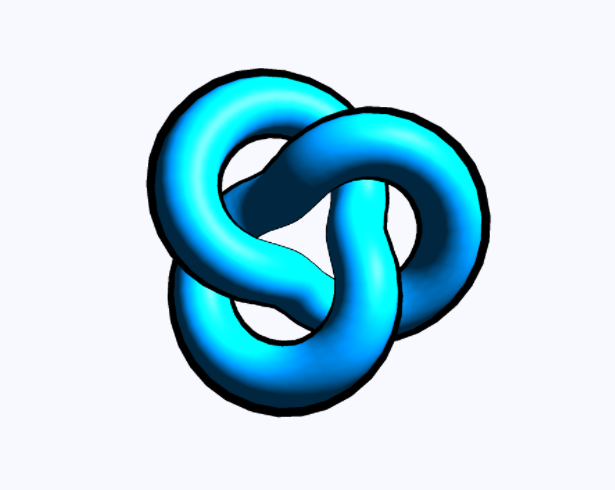 |
With our implementation of edge outlines, more complex objects' edge lines are still missing. We are still working on finding a more consistent and efficient way to detect edges and rendering lines. Below shows an example of a pipe we had difficulty rendering edge outlines for.
| 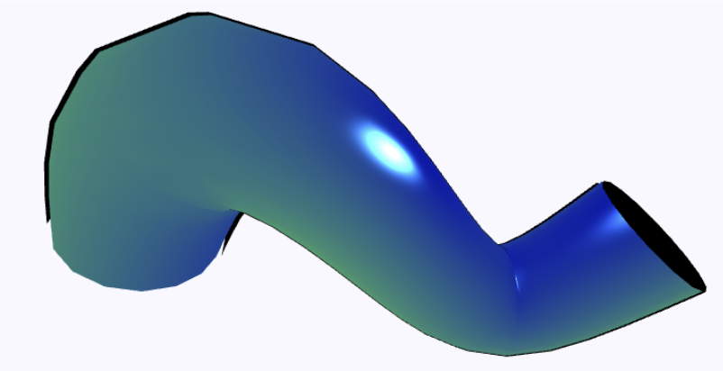 |
From our paper, we are able to represent the surface normals as cool and warm with blue to yellow tones.
| 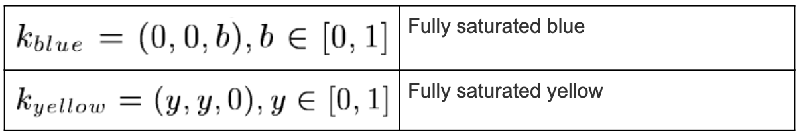 | 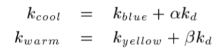 |
| 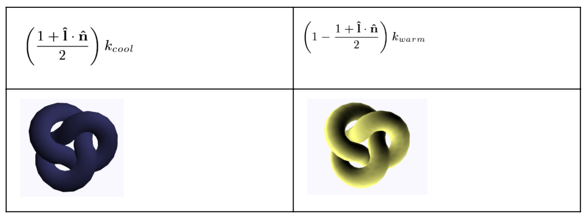 |
Next, we are able to represent the linear blend between our blue/yellow and black/object-color tones with this equation.
| 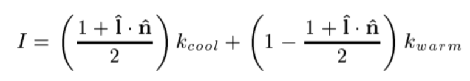 |
This gives us four different parameters that we are able to change to create our desired hue shift. The first two parameters would be k_blue and k_yellow, which affects the strength of our overall temperature shift. The third parameter is the alpha value, which is the prominence of our object color. The last, beta, affects the strength of the luminance shift.
We initially had some issues with determining which coordinate system the vertex position and normal vectors were in when writing the vertex shader because three.js has poor documentation. To try and figure this out, we visualized the torus knot just shaded with the vertex normals as well as the cool and warm components individually. Through this, we were able to properly determine the correct position and normal vectors to pass into the shader program using what we learned from lecture and our prior experience of creating a diffuse shader in project 4.
We summed the result of the cool to warm shift and the specular highlight with the object base color to create the final color. The paper did not specify how the base color was incorporated.
| 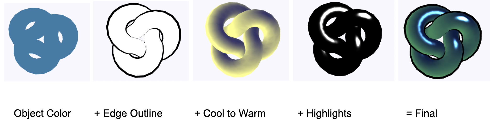 |
We decided to implement our technical drawing shader as a custom shader in three.js. It already had the full rendering pipeline and simple 3D geometric models we could use that had built-in functionality for writing a custom shader.
However, none of us had any experience with javascript or three.js, so most of the beginning challenge was trying to get the javascript and shader to compile. We went through several iterations; some of the first examples that we found of custom shaders in three.js stored the shaders in separate files but web browsers have updated since then to include the Same Origin Policy for security reasons. We experimented with setting up a local server for testing purposes as one of our team members had some experience with Rails, but we ultimately decided not to use this solution for our implementation. Instead, we found an example that showed a much simpler approach of embedding the shader source code as a separate html element within the same document, providing a pointer to the shader using document.getElementById, and parsing it as a string that three.js will then interpret as WebGL.
| 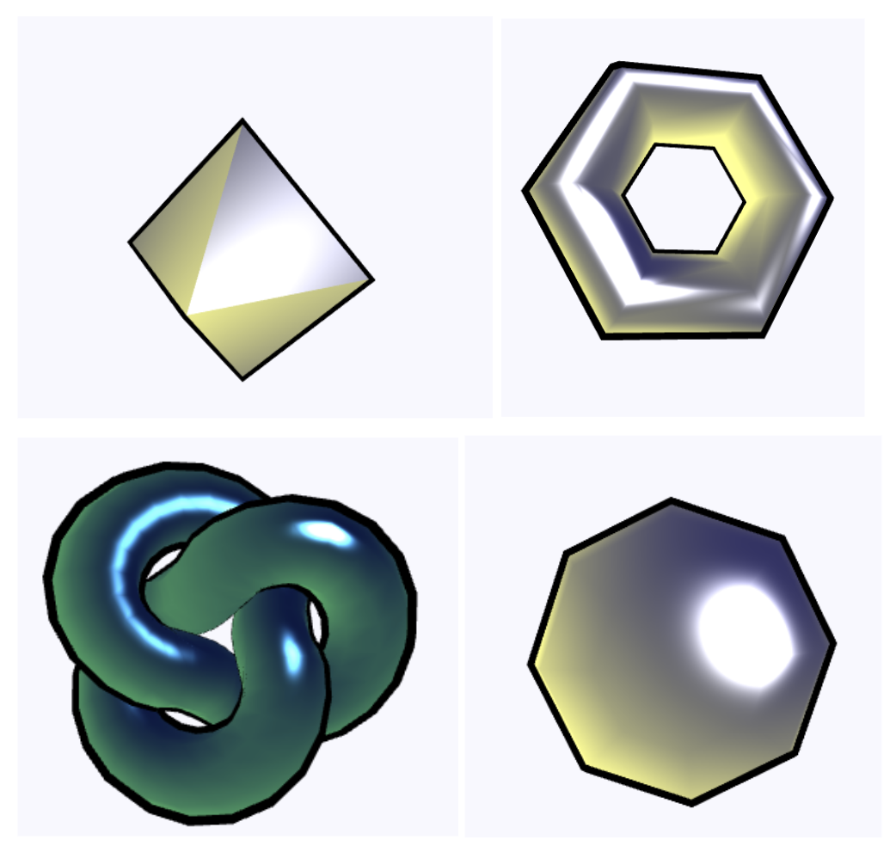 |
We will be mostly following the paper by Gooch, Gooch, Shirley, and Cohen:
Gooch, A., Gooch, B., Shirley, P., & Cohen, E. (1998). A Non-Photorealistic Lighting Model For Automatic Technical Illustration.
Retrieved from https://citeseerx.ist.psu.edu/viewdoc/download?doi=10.1.1.46.6762&rep=rep1&type=pdf
We tried to use this paper for edge detection:
Markosian, L., Kowalski, M., Trychin, S., Bourdev, L., Goldstein, D., Hughes, J. (1997). Real-Time Nonphotorealistic Rendering.
Retrieved from https://cs.brown.edu/people/jhughes/papers/Markosian-RNR-1997/paper.pdf
Project 4 code base (using pre-existing Phong shading implementation) https://cs184.eecs.berkeley.edu/sp21/docs/proj4